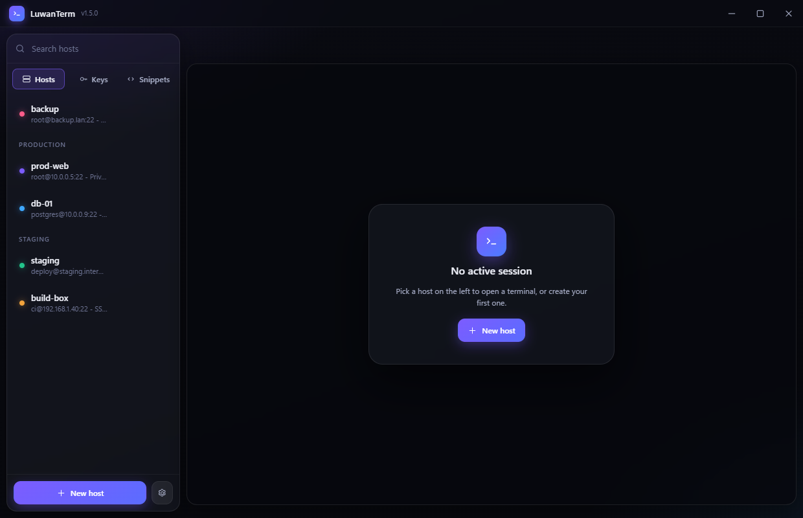

Tabbed SSH terminals, SFTP and port forwarding in one window. Your PuTTY keys work as they are.

Everything a terminal, a file browser and a tunnel manager would do, without three separate windows.
xterm.js with GPU rendering, a find bar and copy-on-select. Each tab keeps its own scrollback and pty size.
Browse, upload, download whole folders, rename and delete over the same connection as the terminal. Transfers show progress and can be cancelled.
Local, remote and a real SOCKS5 proxy, with a live connection count for each tunnel.
Versions 2 and 3, every key type, encrypted or not. Read where they live and never rewritten or converted.
Fingerprints recorded on first use and checked every time, with a loud warning if one ever changes.
Passwords and passphrases are encrypted by Windows. If that is unavailable, nothing is written at all.
A working copy of the interface. Change the font, the size, the accent and how far the terminal lets the background through - exactly the settings the app has. Only fonts installed on this machine are offered, which is how the app picks them too.
LuwanTerm knows 193 monospace families and shows you the ones you have, each rendered in its own face. Checking what you have... This list is live - it runs the same check the app does.
Download and run. If Windows warns about an unknown publisher, that is expected: the builds are signed with a self-signed certificate, which is the honest limit of what a free one can do.
git clone https://github.com/Rathio12/LuwanTerm.git cd LuwanTerm npm install npm start
| Guide | What's in it |
|---|---|
| Getting started | First connection, host profiles, tabs, shortcuts |
| SSH keys | Generating, adding your own, .ppk, installing on a server |
| SFTP | Transfers, folder downloads, cancelling |
| Tunnels | Local, remote and SOCKS5, with worked examples |
| Configuration | Build settings versus user settings |
| Code signing | Why Windows warns and what actually fixes it |
| Make it your own | Rebranding, retheming, adding a panel |
| Architecture | How it fits together, for anyone changing the code |